Overview: why a surgical robot should hand a needle to itself¶
For my M.S. I taught a two-armed surgical robot to pass a curved suture needle from one hand to the other until it holds the needle exactly where a surgeon would want it, using as few handovers as possible. The final policy reached the target grip in at most 3 handovers in simulation, and on a real two-arm robot the success rate went from 0% to 69% once the robot was calibrated and the needle was tracked with an RGBD camera. This post covers why the problem matters, how I framed it for reinforcement learning (RL), and how it ended. The later posts go through each piece in detail, including what broke.
People do this without thinking¶
Watch what happens when a pen lies just out of reach of your writing hand. You pick it up with the other hand, and you pick it up at the right spot, so that the writing hand can take it and be ready to write straight away.
Two decisions are hidden in that motion: where to grab first, and in what pose to hand over. The goal of this project was to give a robot the same intuition for a suture needle.
Surgeons do it all the time while suturing¶
In surgical suturing the needle is regrasped constantly. The needle driver has to hold the needle at the right point along its arc and at the right angle; otherwise driving it through tissue becomes awkward or impossible. When the grip is wrong, the surgeon passes the needle to the other instrument and takes it back in a better pose.
What counts as a good grip is well documented in surgical training material:
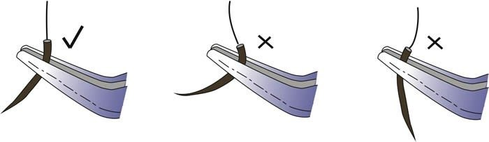


Suturing is one of the most repetitive and time-consuming parts of an operation, which makes it a natural target for automation. Handover is the first building block: before a robot can drive a needle well, it has to be holding the needle well.
Why reinforcement learning?¶
A needle can land on the table in an endless number of poses. For each pose, which point should the robot grab first, with which arm, so that it reaches the target grip with the fewest handovers? Writing that down analytically means enumerating a large set of geometric and kinematic conditions, and it changes every time the robot, the workspace or the target changes.
RL turns the question around. Instead of writing the rules, I define what the robot can observe and do, give it a cost for every handover, and let it find the shortest way to the target grip by trial and error. I started with Q-learning, a simple off-policy method. Off-policy means the robot can also learn from data it did not generate itself, such as demonstrations, which mattered for where I wanted the project to go.
The setup in one picture¶
The robot is the da Vinci Research Kit (dVRK) with two patient-side manipulators (PSM1 and PSM2), simulated in CoppeliaSim.

The RL problem, in short (Part 2 has the details):
| Definition | |
|---|---|
| State | Where the needle is held: grasping point on the arc × grasping angle of the jaw × which hand |
| Action | Which state to move to next (point, angle, hand) and the needle orientation during the handover |
| Reward | −1 for every step until the target grip is reached |
| Episode | A needle appears on the table in a random pose; the episode ends when the robot holds it at the target grip |
Because every step costs −1, the policy that maximises reward is the one that uses the fewest handovers.
The overall loop looks like this:
flowchart LR
A[Needle appears<br/>in a random pose] --> B[IK: which grasps<br/>can each arm reach?]
B --> C[Pick a reachable<br/>first grasp]
C --> D[Policy picks next grasp<br/>+ handover orientation]
D --> E{Target grip<br/>reached?}
E -- no --> B
E -- yes --> F[Done]The inverse-kinematics (IK) check is what keeps the problem physical. Without it the agent happily plans handovers that the arms cannot reach. Part 3 covers that piece.
What the first version did (KRoC, Feb 2023)¶
Here is the trained policy running in CoppeliaSim. A needle spawns on the table in a random pose, and the two arms pass it back and forth until the target grip is reached.
The results presented at KRoC 2023:
- 0–3 handovers were needed to reach the target grip. Zero means the target point was already reachable, so the robot simply grabbed it.
- Training took a few minutes after code optimisation. The first converged run, at 1 million episodes, had taken about 17 hours; Part 4 explains how that came down.
- Too many equally good answers. For some states up to 16 different actions were tied as optimal.
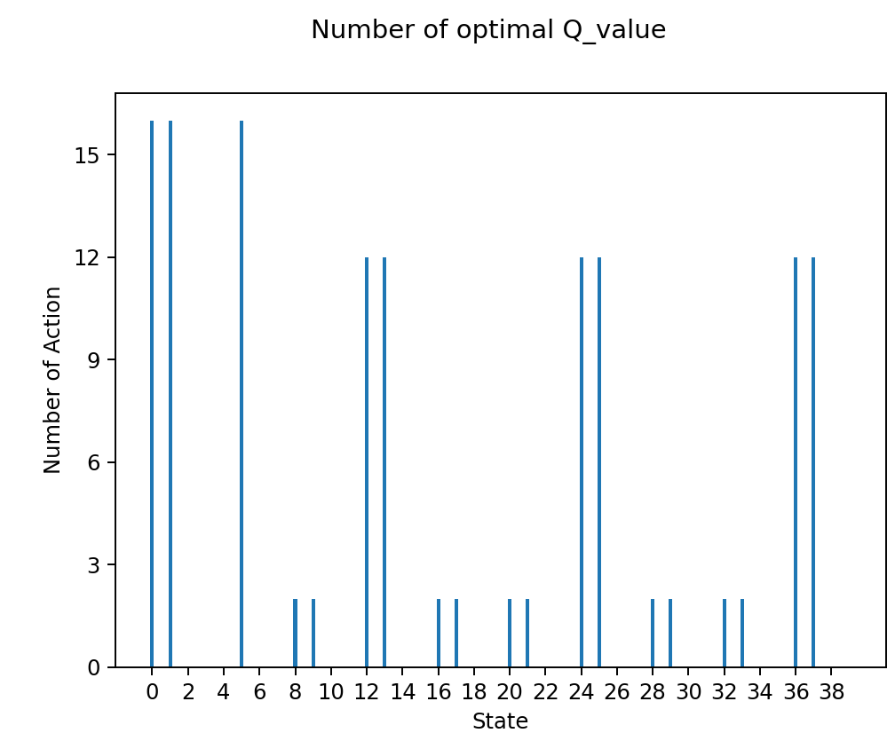
The ties were the most useful finding. The robot was training in open space with few constraints, so many grips looked equally good to it. Adding real constraints to break those ties (joint-limit margin, arms not crossing each other) became the work of early 2023 (Part 7).
The final version: DQN, and a real robot¶
Over 2023 the tabular Q-learner became a small Deep Q-Network (DQN), the reward picked up joint-limit margin and a penalty for crossing the arms, and the whole thing moved from the dVRK to a robot I could actually run experiments on.
In simulation. The final DQN trains in about 3 minutes (10,000 episodes on an RTX 3070). I tested it on 100,000 random needle poses: 41% needed one handover, 30% needed two, and only 9 cases needed three.


On a real robot. For hardware tests I built a bimanual platform from two Franka Emika Panda arms, each carrying a custom 2-DoF cable-driven surgical tool with a slit (notched) bending joint. The remote centre of motion that a surgical robot needs was enforced in software rather than by the mechanism. A Zivid 2 RGBD camera looked down at the table. Only the tool's 2 of the 9 degrees of freedom are cable-driven, so the platform suffers far less hysteresis than a fully cable-driven robot such as the dVRK, which means less time spent correcting the arm with vision and faster motion overall.
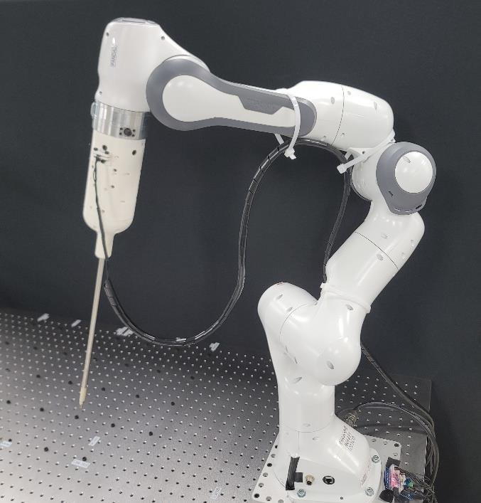
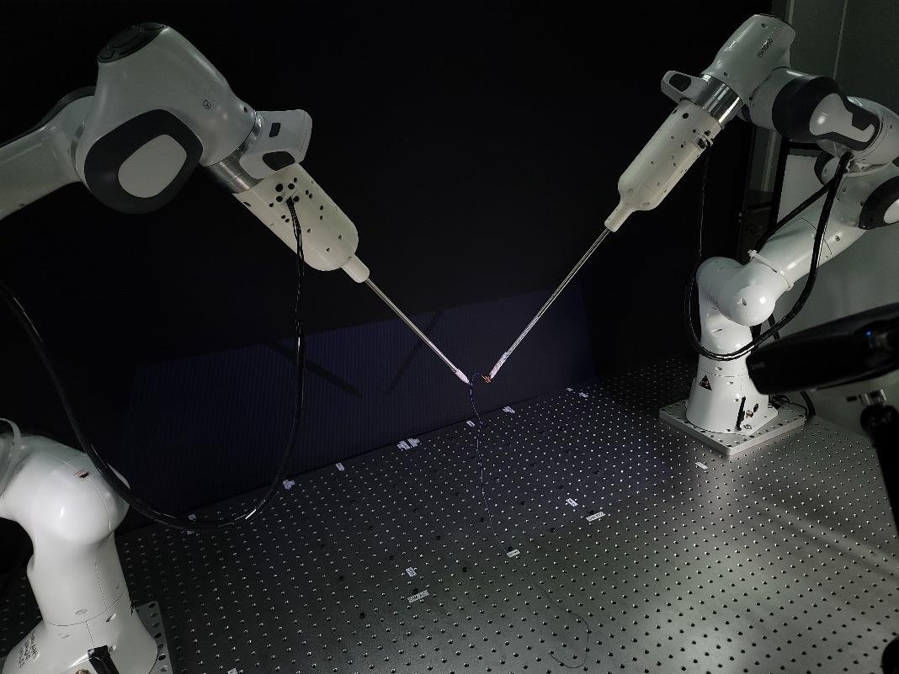

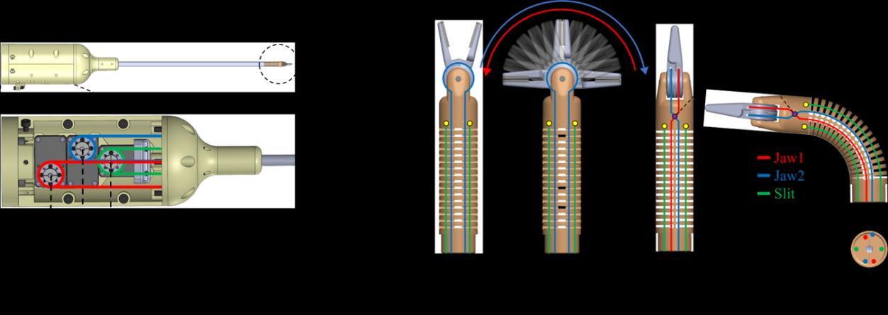
Remote centre of motion by control. Because the RCM lives in software, I can put the pivot wherever the patient and port happen to be. The two-stage inverse kinematics (tool joints first, then the Panda) took 14–32 ms per solve, 19.38 ms on average over 1,000 runs. I verified it by drawing random joint values, computing the forward kinematics, solving the IK for that pose, and checking that the forward kinematics of the answer matched. Part 9 covers the derivation.
Moving the arms. Every move is planned in task space, relative to the RCM, because interpolating joints would let the shaft drift off the pivot between waypoints. Each sampled pose goes through the RCM IK, and the joint waypoints are timed with a cubic spline that I modified with two virtual waypoints, so every move starts and ends with zero velocity and zero acceleration. Part 10 covers the planner, the spline derivation and the libfranka lessons.
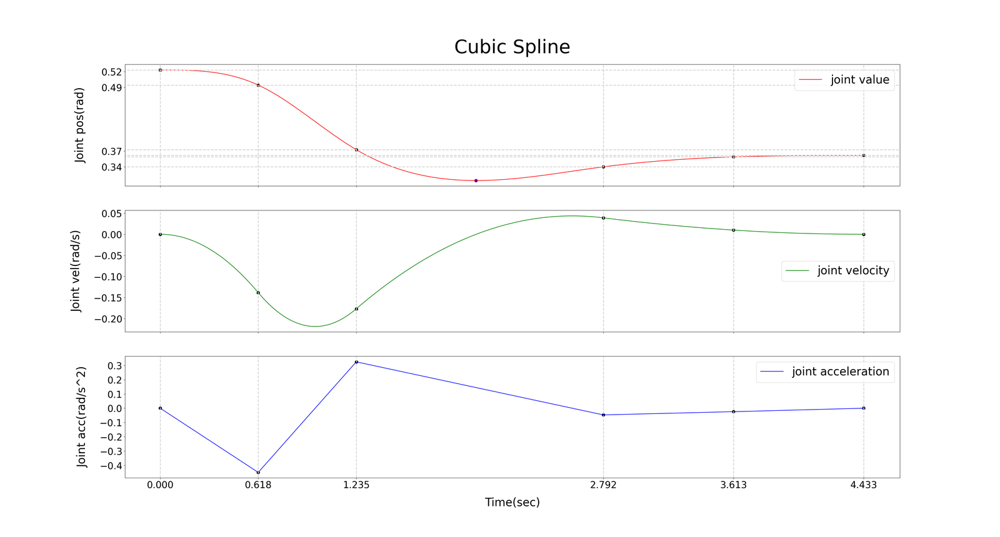
The first real runs failed every time. The Panda's position error at the tool tip was about 9 mm, which is a lot when the needle is 20 mm across. Two fixes made the difference:
- Calibration. I calibrated the camera against colour-ball markers on the optical table (0.3 mm, 0.48° mean error), then used it to measure and compensate the Panda's joint offsets. Mean position error dropped from 8.9 mm to 1.2 mm.
- Seeing the needle. Before each grasp the camera re-estimated the needle pose (colour segmentation, point cloud, PCA and circle fitting), so small slips during earlier handovers did not add up.
Why calibration mattered so much: the joint encoders disagreed with reality by up to about 5° on some joints, and with a 60 cm lever arm a 5° error moves the tool tip by roughly 1.5 cm. Industrial arms are very repeatable, though, so the error was nearly the same every time, and averaging it out over 60 measured poses was enough to remove most of it.
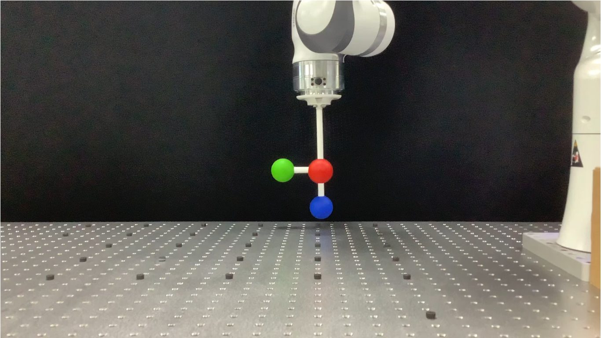
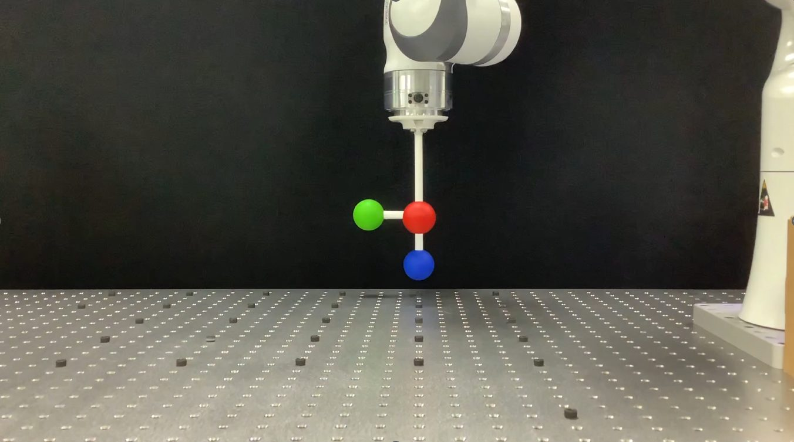
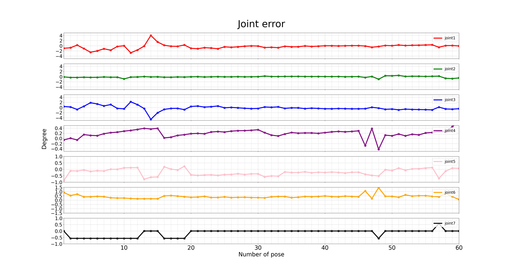
With vision in the loop, the handover algorithm proposes a target pose, the robot moves, and the camera measures where the needle actually is before the next step:
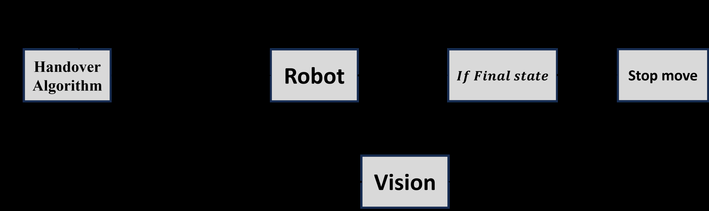
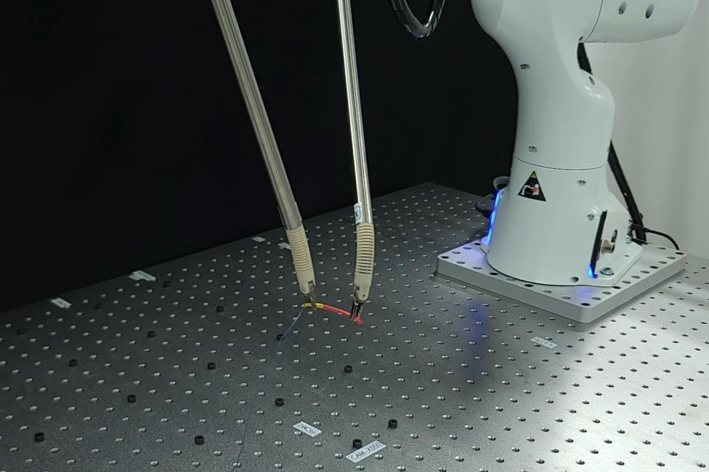
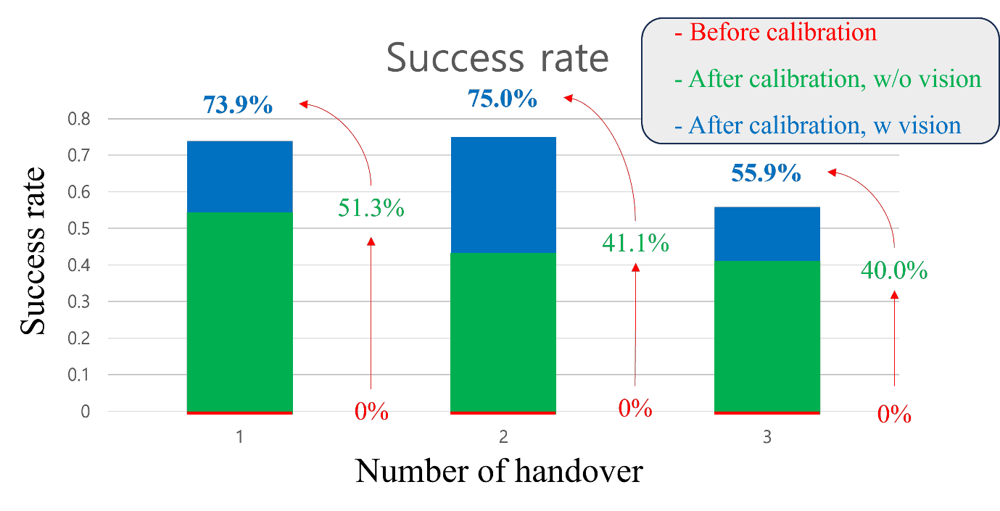
| Condition | 1 handover | 2 handovers | 3 handovers |
|---|---|---|---|
| Before calibration | 0% | 0% | 0% |
| After calibration | 51.3% (80 trials) | 41.1% (90) | 40.0% (20) |
| Calibration + needle pose estimation | 73.9% (46) | 75.0% (12) | 55.9% (34) |
Overall, success went from 0% to about 45% with calibration, and to about 69% with calibration plus vision.
The difference is easy to see on video. Both runs below use the calibrated robot; only the right one re-measures the needle with the camera before grasping.
More runs from November 2023, on different backgrounds and with thread attached:
For context, I compared this with published results in my defense. Those works start from a needle that is already held, so they measure one step of the pipeline. Chaining a 91% simulated pick-and-place success with the 73.3% of Chiu et al. or the 96.7% of Wilcox et al. gives roughly 66% and 88%. My 69% covers the whole sequence from a needle lying on the table to the final grip, with up to three handovers, and the one-handover case alone reached 73.9%. The setups differ, so this is a sanity check rather than a ranking. Most remaining failures happened at the very first grasp, when the needle was lying in an awkward pose on the table, and errors still built up with more handovers. One more lesson from the hardware: after roughly 9,000 repeated motions, the tool's cables had stretched so much that they lost all tension.
Where the series goes from here¶
- This post: motivation and overview
- Handover as a GridWorld MDP, solved with tabular Q-learning
- Which grasps are reachable? dVRK inverse kinematics as a filter
- Making Q-learning converge, and cutting training from 17 h to 5 h
- Handover in CoppeliaSim, and choosing the first grasp with V(s)
- From a Q-table to DQN: ties, loops, a transform bug, and policy-gradient attempts
- Shaping the reward: joint margin and arm crossing
- Building a surgical robot from a Panda: slit tool, DH parameters, URDF, MoveIt
- Remote centre of motion in software: a two-stage inverse kinematics
- Task-space planning and driving a real Franka
- Calibrating camera and robot: 8.9 mm → 1.2 mm
- Finding the needle: UNet, colour segmentation and circle fitting
- Stereo vs RGBD: a needle's 6D pose, and closing the loop with vision
Publications¶
- Hakyoon Lee, Optimal Handover of Surgical Needle Using Reinforcement Learning for Suturing Automation, M.S. thesis, Department of Robotics and Mechatronics Engineering, DGIST, 2024. Advisor: Prof. Minho Hwang; co-advisor: Prof. Sang Hyun Park.
- M.S. thesis proposal, Autonomous Bimanual Regrasping for Optimal Grasping of Surgical Needle, DGIST, 2023. It already set out the four contributions the thesis delivered: a handover algorithm for grasping the optimal point, an RL model fast enough to train just before surgery, a hybrid motor-and-cable surgical platform, and a tool that turns a general-purpose arm into a surgical one.
- "봉합용 바늘의 최적 파지를 위한 Handover 자동화" (Handover automation for optimal grasping of a suture needle), presented at the Korea Robotics Society Annual Conference (KRoC 2023), 17 Feb 2023, session FC2-4.
Related work that shaped this project: Chiu et al., "Bimanual Regrasping for Suture Needles using Reinforcement Learning for Rapid Motion Planning," ICRA 2021, and Wilcox et al., "Learning to Localize, Grasp, and Hand Over Unmodified Surgical Needles," ICRA 2022.
Next: 2. Handover as a GridWorld MDP →